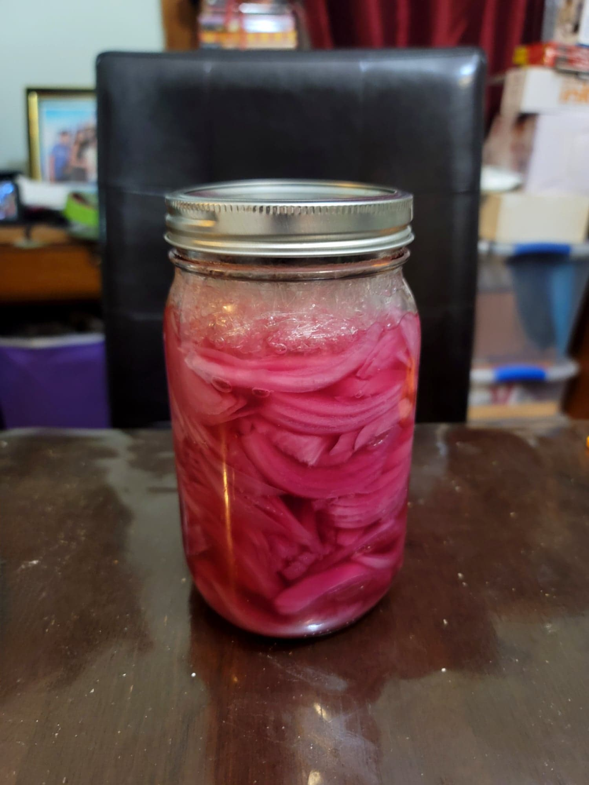

Pickled Red Onions

Ingredients:
- Red onions, thinly sliced, as needed
- Salt brine, 2 tsp Salt per 1 cup Water, as needed
Instructions:
- Fill a jar with thinly sliced red onions. Then pour in the salt brine nearly to the top. Place a fermentation weight to ensure that the onions are completely submerged and then loosely cover.
- Place into a room temperature and dark location. Let ferment for about 7 days or to preference, checking occasionally that the onions are fully submerged. Once fermented to preference, store in the fridge or use immediately. Serve as a topping, in sandwiches, or as desired.